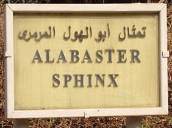
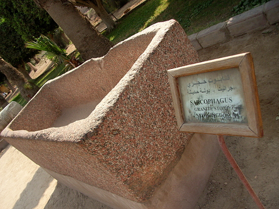
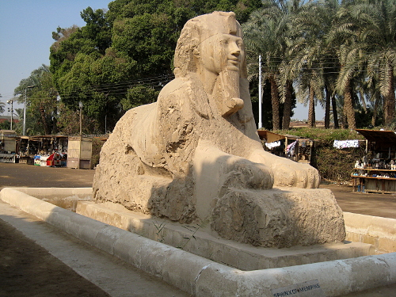
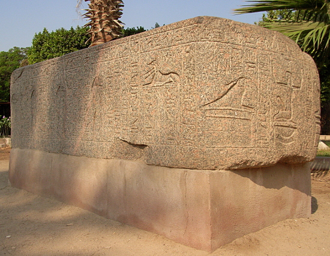
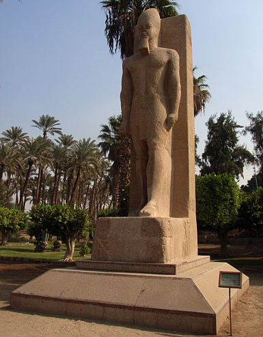

Egypt Trav-E-Log ©
Mit Rahina Museum, Memphis, Egypt
7 Nov 2010, Memphis, Egypt
-------------------------------------------
Met a fellow traveller in Cairo that had similar ambitions -- hire a taxi for the day to take us to the sites in Giza, Saqqara, Dahshur, and Memphis. The driver was not a guide, but understood enough English to understand where we wanted to go. We fed the driver and supplied drinks as a bonus. I've done this often, and wish more travellers would do the same for their drivers and guides.
-------------------------------------------
Red Granite Sarcophagus
(to the right).
(below) |  |
 | Ramses II face is on the Alabaster Sphinx. |
This huge block of granite is just covered with hieroglyphs. |  |
 | Standing granite statue of Ramses II overlooking Memphis, the Pharaonic capital of Egypt. |
Question? Contact me at the Juno.com address Dancer2SEAsia.
Life is Good When You Travel! Start planning your next trip!